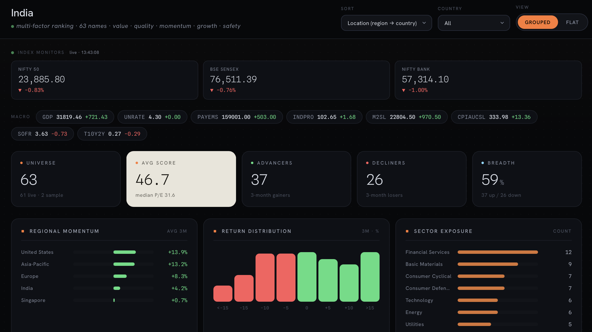

About Me
network defense, secure infrastructure & security automation
I hold an MSc in Network and Information Security from Kingston University London, with a foundation in cybersecurity, secure infrastructure and risk assessment — finding vulnerabilities, weighing their business impact, and communicating risk clearly across cloud and on-prem environments.
My dissertation designed an Adaptive Protocol Selector System (APSS) that dynamically chooses the optimal VPN protocol — WireGuard, OpenVPN or IPSec — from real-time network conditions, backed by a comparative analysis of 20+ research papers. I've also authored a short research manuscript on financial-crime (FinCrime) investigations, and mentored 15+ MSc students as a teaching volunteer.
Lately I learn by building: Argos, an AI privacy & data-loss prevention platform; Meridian, a quant equity-research platform; and a self-hosted vulnerability-triage system over NVD, KEV and EPSS — full-stack, security-minded products you can explore below.
Projects & Research
three ongoing builds, each with a dedicated case study

Keeps sensitive data out of the AI tools your people use — catching and removing it before requests leave the device — and rolls org-wide AI risk into a single executive portal with zero raw-data exposure.

A self-hosted CVE triage platform: composite scoring, gap-aware SQLite caching, live SSE streaming, a threat-landscape aggregator and a background poller with native desktop alerts.

A 266-name global multi-factor screener with a transparent, math-backed recommendation engine, live market monitors, a goal-based planner and a sourced catalyst watchlist — server-rendered Flask, no framework.
A dynamic VPN selector that switches between WireGuard, OpenVPN and IPSec on real-time network conditions, validated on AWS EC2 with Kali Linux clients.
Python and Bash tooling for DDoS-resilience testing and automated JSON→CSV vulnerability-reporting pipelines that cut manual assessment effort.
A spaced-repetition learning system (Ebbinghaus / Leitner) with analytics-driven tracking and gamification for long-term retention.
A multi-segment network topology with VLANs, ACLs and core services (DNS, DHCP, email), designed and tested in Cisco Packet Tracer.
Professional Experience
where I've worked and what I shipped
- Mentored 15+ MSc Network & Information Security students through structured in-person and remote sessions.
- Designed step-by-step lab walkthroughs for vulnerability assessment, penetration testing and network defense — Nessus, Metasploit, MobSF, Wireshark.
- Supported dissertation scoping, technical validation and security-focused report structuring.
- Configured VLANs, ACLs and routing policies to enforce traffic isolation across multiple network zones.
- Analyzed packet captures to surface misconfigurations and risks; applied IDS/IPS concepts and firewall hardening.
- Designed and tested multi-segment network topologies in Cisco Packet Tracer.
- Built cloud workflows on AWS core services aligned with AWS Cloud Foundations.
- Trained and evaluated ML models in SageMaker; automated steps with Lambda.
- Applied IAM concepts and permission boundaries for secure resource usage.
- Developed a real-time COVID-19 API on Heroku-hosted data sources.
- Managed the API lifecycle in Postman with secure endpoint design and testing.
- Earned the Postman API Fundamentals Student Expert certification.
Education
Research & Writing
dissertation, manuscripts & published work
Designed a system that dynamically selects the optimal VPN protocol — WireGuard, OpenVPN or IPSec — from real-time network conditions, with automated switching logic and an AWS EC2 + Kali Linux test bed. Grounded in a comparative analysis of 20+ research papers on protocol performance vs. security trade-offs.
A short manuscript on financial-crime investigations — examining detection, investigative workflow and the data signals behind illicit financial activity.
Read the manuscriptA spaced-repetition learning framework based on the Ebbinghaus Forgetting Curve and the Leitner Method, with analytics-driven tracking and gamification — peer-reviewed and published in Springer LNNS.
Skills & Certifications
the tooling I reach for, and the certifications behind it
Get in Touch
always open to new projects, collaborations & opportunities